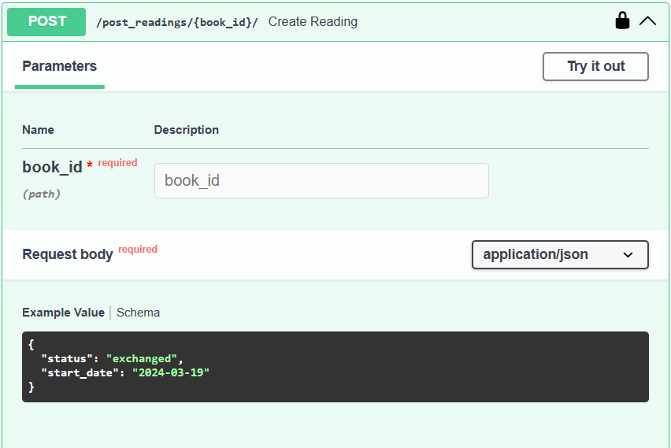
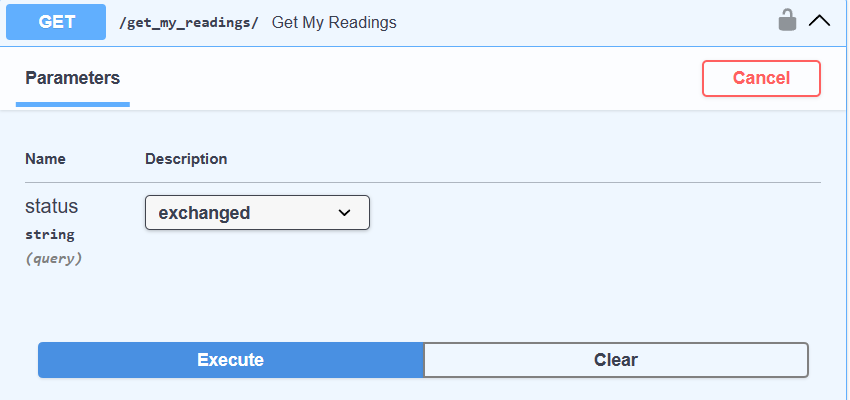
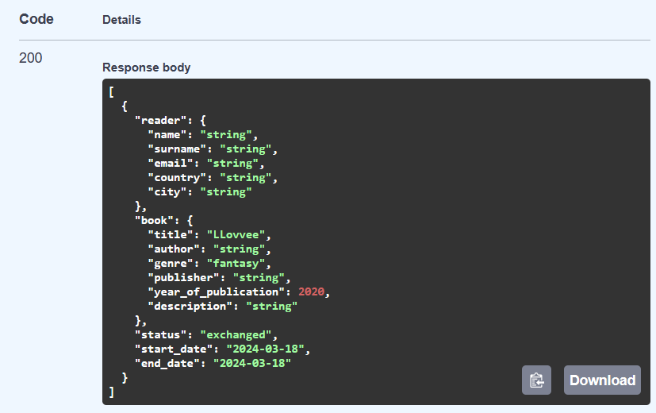
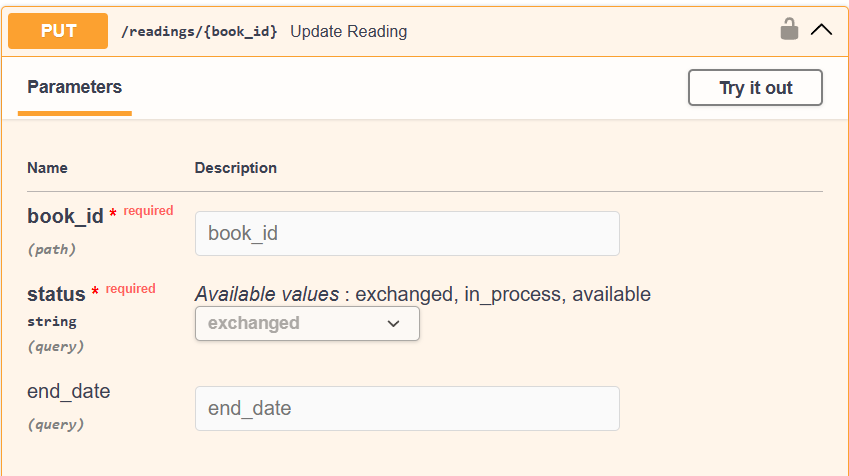
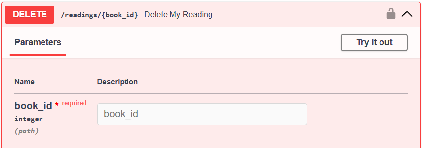

АПИ методы
Для работы с пользователями
@app.get("/users/me/", response_model=User)
def read_users_me(current_user: User = Depends(get_current_user), session=Depends(get_session)):
return session.exec(select(Users).where(Users.id == current_user.id)).first()
@app.delete("/users_me/delete{user_id}")
def user_delete_my_account(user_id: int, current_user: User = Depends(get_current_user), session=Depends(get_session)):
if user_id != current_user.id:
raise HTTPException(status_code=401, detail="You can't delete another user")
statement = select(Users).where(Users.id == user_id)
results = session.exec(statement)
user = results.one()
session.delete(user)
session.commit()
return {"status": 201, "message": "deleted"}
@app.get("/users/", response_model=List[UserBase])
def read_users(session=Depends(get_session)):
users = session.exec(select(Users)).all()
return users
@app.get("/user/{user_id}", response_model=UserGet)
def get_concrete_users(user_id: int,
country: str = None,
city: str = None,
current_user: User = Depends(get_current_user),
session=Depends(get_session)):
statement = select(Users).where(Users.id == user_id)
if city:
statement = statement.where(Users.city == city)
if country:
statement = statement.where(Users.country == country)
user = session.exec(statement).first()
return user
Для работы с книгами
@app.post("/post_books/")
def create_book(book: BooksPost, current_user: User = Depends(get_current_user), session=Depends(get_session)):
book = Books(title=book.title,
author=book.author,
genre=book.genre,
publisher=book.publisher,
year_of_publication=book.year_of_publication,
description=book.description,
owner_id=current_user.id)
# book = Books.model_validate(book)
session.add(book)
session.flush()
#session.commit()
#session.refresh(book)
new_reading = Readings(reader_id=current_user.id,
book_id=book.id,
status="available",
start_date=datetime.date.today(),
end_date=None
)
session.add(new_reading)
session.commit()
session.refresh(book)
return book
@app.get("/get_books/", response_model=List[BooksPost])
def read_books(author: Optional[str] = Query(None, title="Author", description="Filter books by author"),
status: ReadingStatus = None,
genre: Genres = None,
session=Depends(get_session)):
if status:
statement = (
select(Books)
.join(Books.book_read)
.where(Readings.status == status)
)
else:
statement = select(Books)
if author:
statement = statement.where(Books.author.contains(author))
if genre:
statement = statement.where(Books.genre == genre)
books = session.exec(statement).all()
return books
@app.get("/books/{book_id}", response_model=BooksBase)
def get_concrete_book(book_id: int, current_user: User = Depends(get_current_user), session=Depends(get_session)):
book = session.exec(select(Books).where(Books.id == book_id)).first()
return book
@app.get("/books/my_library/", response_model=List[MyBooksBase])
def get_my_books(current_user: User = Depends(get_current_user), session=Depends(get_session)):
user = session.exec(select(Users).where(Users.username == current_user.username)).first()
books = session.exec(select(Books).where(Books.owner_id == user.id)).all()
return books
@app.delete("/books/delete/{book_id}")
def delete_my_book(book_id: int,
current_user: User = Depends(get_current_user),
session=Depends(get_session)):
book = session.exec(select(Books).where(Books.id == book_id)).first()
if book.owner_id != current_user.id:
raise HTTPException(status_code=401, detail="You can't delete book not yours")
session.delete(book)
session.commit()
return {"status": 201, "message": "deleted"}
Для работы с владение книг
@app.post("/post_readings/{book_id}/")
def create_reading(book_id: Optional[int], reading: ReadingPost, current_user: User = Depends(get_current_user),
session=Depends(get_session)):
new_reading = Readings(reader_id=current_user.id,
book_id=book_id,
status=reading.status,
start_date=reading.start_date,
end_date=None
)
session.add(new_reading)
session.commit()
session.refresh(new_reading)
return new_reading
'''
@app.get("/get_readings/", response_model=List[ReadingRead])
def get_readings(status: ReadingStatus = None,
session=Depends(get_session)):
statement = select(Readings)
if status:
statement = statement.where(Readings.status == status)
readings = session.exec(statement).all()
return readings
'''
@app.get("/get_my_readings/", response_model=List[ReadingRead])
def get_my_readings(status: ReadingStatus = None,
current_user: User = Depends(get_current_user),
session=Depends(get_session)):
statement = select(Readings).where(Readings.reader_id == current_user.id)
if status:
statement = statement.where(Readings.status == status)
readings = session.exec(statement).all()
return readings
@app.put("/readings/{book_id}", response_model=ReadingRead)
def update_reading(book_id: Optional[int],
status: ReadingStatus,
end_date: Optional[date] = None,
current_user: User = Depends(get_current_user),
session: Session = Depends(get_session)):
reading = session.exec(select(Readings).where(Readings.reader_id == current_user.id,
Readings.book_id == book_id)
).first()
if not reading:
raise HTTPException(status_code=404, detail="Reading record not found")
# Update the fields if provided
if status:
reading.status = status
if end_date:
reading.end_date = end_date
session.commit()
session.refresh(reading)
return reading
Для работы с запросами на обмен
@app.post("/post_request/{book_id}/")
def create_request(book_id: Optional[int],
request: BaseRequest,
current_user: User = Depends(get_current_user),
session=Depends(get_session)):
reading = session.exec(select(Readings).where(Readings.book_id == book_id,
#Readings.end_date is None,
Readings.status == "available")).first()
new_request = Requests(sender_id=current_user.id,
receiver_id=reading.reader_id,
book_id=book_id,
status="sent",
conditions=request.conditions,
response=None
)
session.add(new_request)
session.commit()
session.refresh(new_request)
return new_request
@app.get("/get_my_requests/", response_model=List[GetRequest])
def get_my_requests(status: RequestStatus = None,
sent: bool = True,
received: bool = True,
current_user: User = Depends(get_current_user),
session=Depends(get_session)):
statement = select(Requests)
if sent and received:
statement = statement.where(
or_(
Requests.sender_id == current_user.id,
Requests.receiver_id == current_user.id
))
elif sent and not received:
statement = statement.where(Requests.sender_id == current_user.id)
elif received and not sent:
statement = statement.where(Requests.receiver_id == current_user.id)
if status:
statement = statement.where(Requests.status == status)
requests = session.exec(statement).all()
return requests
@app.put("/requests/{book_id}", response_model=UpdateRequest)
def update_response(book_id: Optional[int],
status: RequestStatus = "accepted",
response: Optional[str] = None,
current_user: User = Depends(get_current_user),
session: Session = Depends(get_session)):
request = session.exec(select(Requests).where(Requests.receiver_id == current_user.id,
Requests.book_id == book_id,
Requests.status == "sent")
).first()
if not request:
raise HTTPException(status_code=404, detail="Request record not found or status isn't 'sent'")
if status:
request.status = status
if response:
request.response = response
session.commit()
session.refresh(response)
return response
Для работы с отзывами
@app.post("/post_review/{book_id}/")
def create_review(book_id: Optional[int],
review: ReviewBase,
current_user: User = Depends(get_current_user),
session=Depends(get_session)):
if review.rating < 0 or review.rating > 10:
raise HTTPException(status_code=404, detail="Rating should be in interval [0, 10]")
new_review = Review(reviewer_id=current_user.id,
book_id=book_id,
rating=review.rating,
comment=review.comment
)
session.add(new_review)
session.commit()
session.refresh(new_review)
return new_review
@app.get("/books/{book_id}/reviews", response_model=List[ReviewsGet])
def read_reviews_on_book(book_id: int, session=Depends(get_session)):
# book = session.exec(select(Books).where(Books.id == book_id)).first()
reviews = session.exec(select(Review).where(Review.book_id == book_id))
return reviews
    